참고할 진짜 사이트 고르기 — Awwwards MCP
모델을 아무리 바꿔도 에이전트에게 디자인을 그냥 맡기면 다른 AI 사이트에서 본 스타일이 그대로 나와요. 영상은 모델보다 에이전트에게 쥐여 주는 도구가 더 중요하다고 봐요. 첫 화면이 그 생각을 그대로 보여 줘요. 왼쪽의 참고 사이트(Reference), 디자인 스킬(SKILL.md), 스타일 가이드 세 가지가 모델로 들어가고, 그 결과로 오른쪽 커피 로스터리 페이지가 나와요.
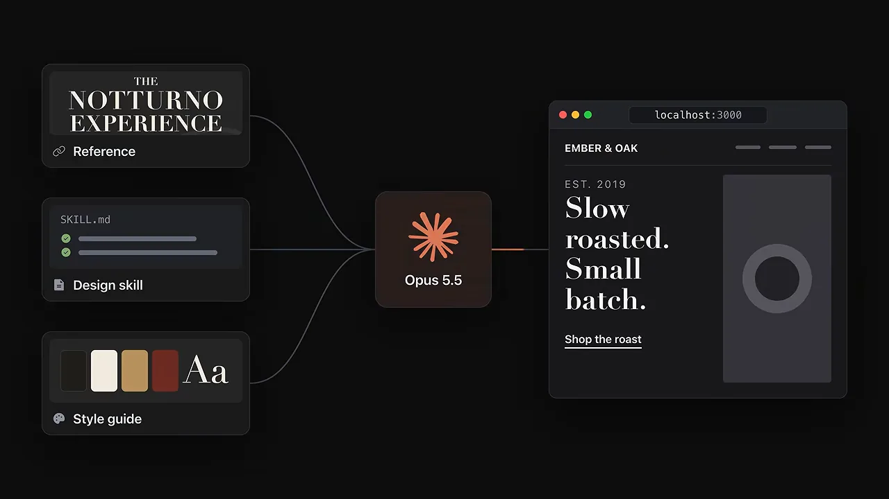
영상이 고른 여섯 저장소는 사이트를 만드는 흐름의 서로 다른 단계를 맡아요. 아래 그림은 영상 설명을 따라 단계별로 묶은 거예요.
수상작에서 참고할 사이트 고르기
첫 번째 저장소는 Awwwards MCP예요. Awwwards는 웹 디자인에 상을 주는 사이트인데, 매일 'Sites Of The Day'를 골라 올려요. 아래 화면처럼 수상작마다 큰 썸네일이 붙어 있어서 내 프로젝트에 맞는 분위기를 눈으로 고를 수 있어요.
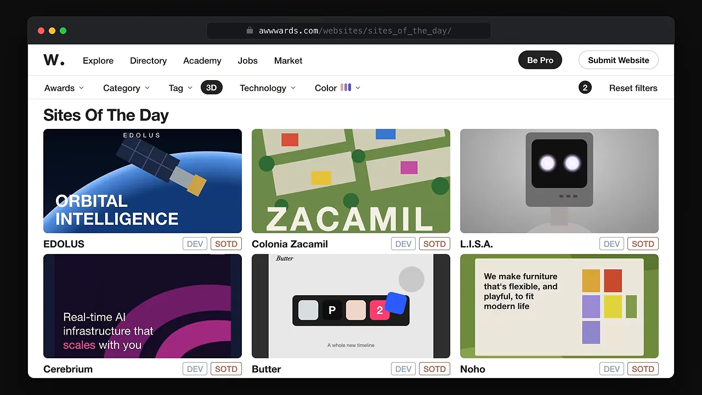
MCP를 연결하고 원하는 사이트를 말로 설명하면, 에이전트가 Awwwards에서 예시를 찾아 스크린샷과 링크를 함께 보여 줘요. 저장소에 든 스킬은 만들기 전에 사이트를 공부하는 순서를 정해 둬요. 화면 위쪽 막대의 네 단계가 그 순서예요. 찾고(Search), 고르고(Pick), 캡처하고(Capture), 디자인 정보를 읽어요(Read design). 고른 사이트의 Awwwards 페이지에 적힌 디자인 정보를 읽고, 브라우저 도구가 있으면 페이지 전체를 캡처하고 움직임까지 녹화해요.
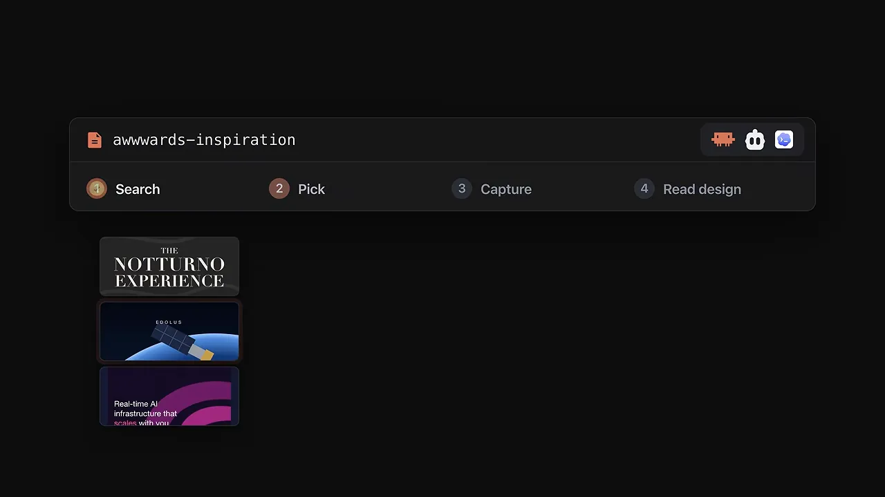
설정은 기본값을 쓰지 않아요
설정 명령을 실행하면 다섯 가지를 물어보고, 'use defaults'라고 답하면 기본값으로 넘어가요. 영상은 기본값을 쓰지 말라고 해요. 앞에서 말한 도구 상당수가 기본으로 켜져 있지 않다는 이유예요. 화면 아래쪽에 영상이 입력한 답이 보여요.
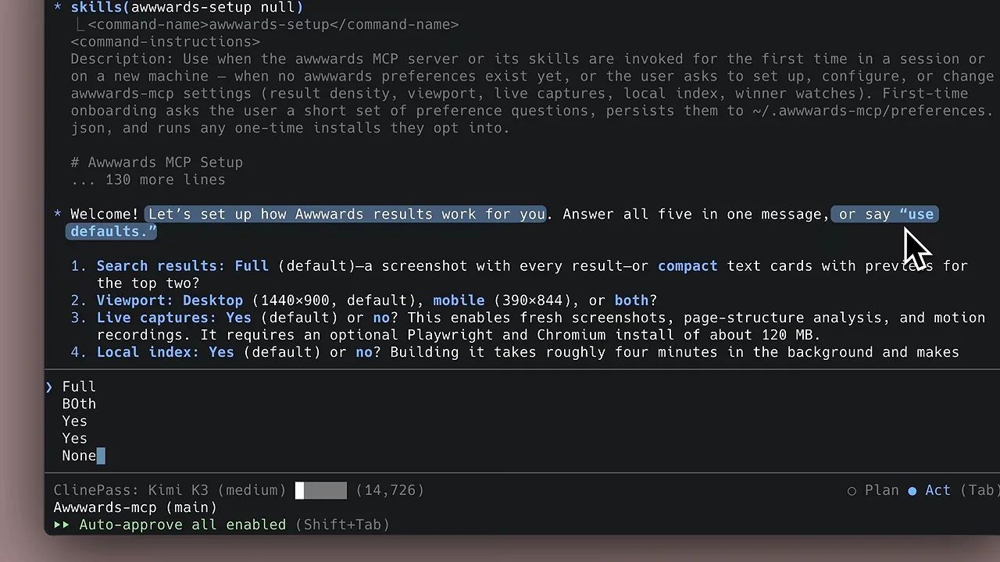
| 질문 | 고를 수 있는 것 | 영상의 답 |
|---|---|---|
| Search results | Full(기본, 결과마다 스크린샷) 또는 compact(텍스트 카드와 상위 두 개 미리보기) | Full |
| Viewport | Desktop 1440×900(기본), mobile 390×844, both | Both |
| Live captures | Yes(기본) 또는 no. 새 스크린샷, 페이지 구조 분석, 움직임 녹화. Playwright와 Chromium 약 120MB 필요 | Yes |
| Local index | Yes(기본) 또는 no. 백그라운드에서 4분쯤 걸려 만들어요 | Yes |
| 다섯 번째 질문 | 화면에서 잘려 보이지 않아요 | None |
MCP 없이 만든 첫 버전과 비교하기
데모 주제는 에이전트 스킬을 사고파는 마켓 Skillbay의 랜딩 페이지예요. 먼저 Awwwards MCP 없이 만든 결과가 아래예요. 큰 제목 'Give your agent superpowers.'와 주변에 떠 있는 작은 카드들이 있어요. 나쁘진 않지만, 원했던 애니메이션과 시각 효과가 많이 빠져 있었어요.
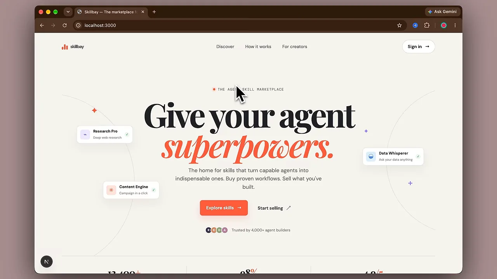
그다음 inspiration 명령으로 소프트웨어 제품 사이트 목록을 받았어요. 첫 목록은 마음에 드는 게 없어서 한 번 더 요청했고, 두 번째 목록은 'Better references'라는 제목으로 왔어요. 사이트마다 어떤 점을 빌려 올지(Borrow)가 한 줄씩 붙어 있어요.
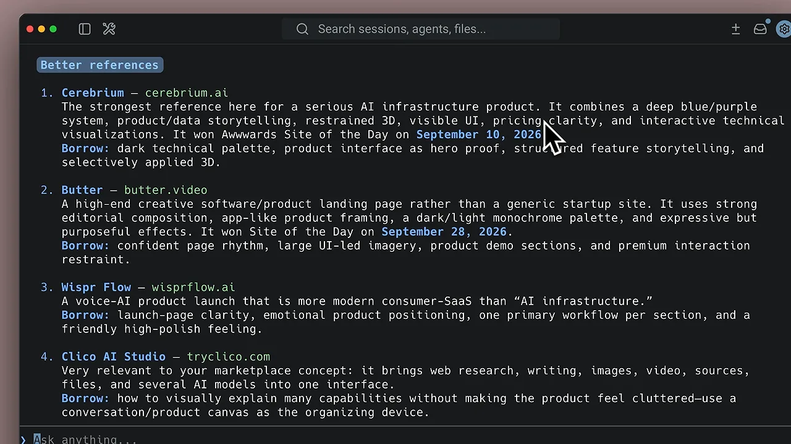
영상은 사이트 하나만 베끼지 않았어요. 아래 입력처럼 Wispr Flow에서는 제품 자체를 페이지 안에서 보여 주는 방식을, Clico에서는 직접 입력해 보는 'try me' 검색창을, Butter에서는 부드러운 애니메이션을 가져오라고 했어요. 이렇게 만든 최종 사이트는 첫 버전보다 애니메이션이 훨씬 나아졌다고 해요.
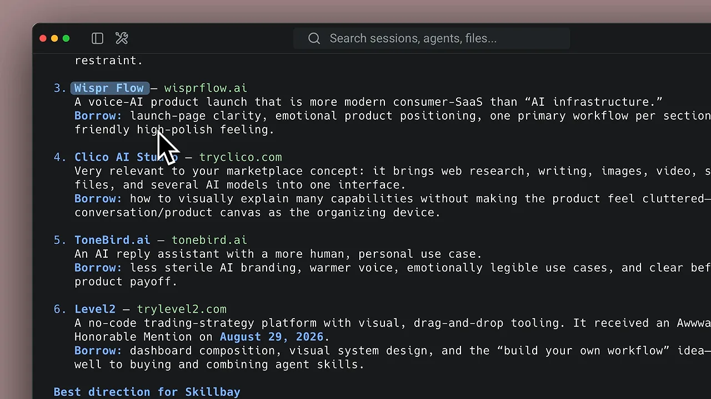
화면 크기별로 깨지는 곳 잡기 — Responsively
노트북 화면에서 공들인 사이트가 폰이나 태블릿에서는 어긋나는 일이 흔해요. 두 번째 저장소 Responsively는 사이트 주소를 넣고 보고 싶은 화면 크기를 고르면, 그 화면들을 나란히 띄워 주는 앱이에요. 아래는 앞의 데모 랜딩 페이지를 iPhone 12 Pro, iPad, MacBook Pro 세 화면에 띄운 모습이에요. 같은 제목 'Teach your agent anything.'이 화면 폭에 따라 줄바꿈과 크기가 다르게 나와요.
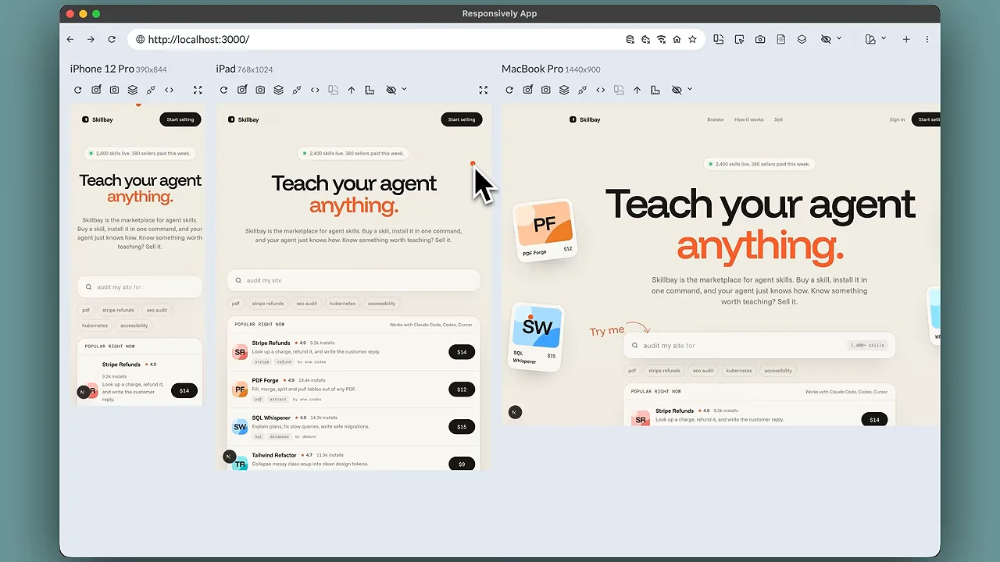
앱을 하나 더 쓰면 작업이 느려질 것 같지만, 영상은 그렇지 않다고 해요. Responsively에는 MCP 서버가 들어 있어서 에이전트에 연결할 수 있어요. 아래 README의 회색 칸이 Claude Code에 연결하는 명령이고, 그 아래가 Cursor용 설정이에요.
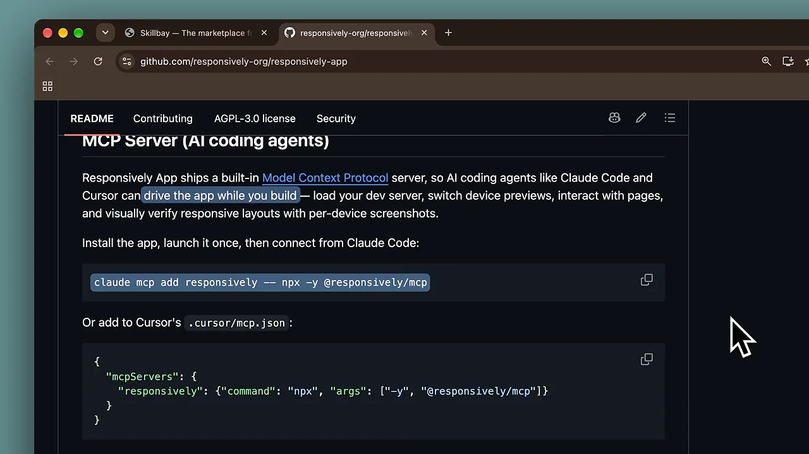
claude mcp add responsively -- npx -y @responsively/mcp연결하면 이렇게 돌아가요.
- 앱이 화면마다 스크린샷을 찍어 에이전트에게 돌려줘요
- 에이전트가 스크린샷에서 맞지 않는 곳을 찾아요 — 메뉴를 열어 본 상태도 확인해요.
- 사이트를 고친 뒤 새로 찍어서 크기마다 다시 확인해요
사람의 디자인 감각을 스킬로 — Genjutsu
새 모델이 나와도 시간이 조금 지나면 그 모델의 디자인도 AI 슬롭처럼 보이기 시작해요. 그래서 사람의 디자인 감각을 담은 스킬을 에이전트에게 따르게 해요. taste skill, hallmark 같은 스킬이 이런 역할을 하고, 세 번째 저장소 Genjutsu도 같은 계열이에요.
Genjutsu에는 스킬이 세 개 있어요. 아래 화면 위쪽 탭이 cast, paint, bunshin이고, 지금은 cast가 켜져 있어요. 페이지 안에서 Get started 버튼 하나에만 cast 표시가 붙어 있죠. cast는 이렇게 페이지의 한 부분만 이 스킬의 감각으로 바꿔요.
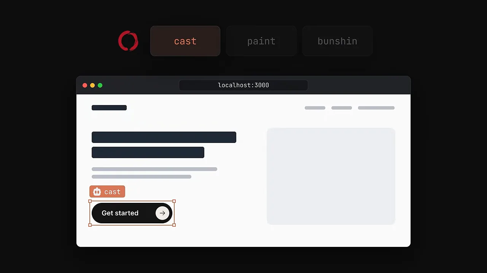
| 스킬 | 맡는 범위 | 하는 일 |
|---|---|---|
| cast | 페이지의 한 부분 | 그 부분만 스킬의 디자인 감각으로 바꿔요 |
| paint | 페이지 하나 | 페이지 전체를 계획하고 만들어요 |
| bunshin | 여러 페이지 | 에이전트 팀 전체를 스킬 하나에 담아 사이트를 만들어요 |
Bunshin: 스킬 하나에 담은 에이전트 팀
Bunshin은 페이지마다 서브 에이전트를 하나씩 붙여서 여러 페이지를 동시에 만들어요. 메인 에이전트가 팀을 이끌며 공통 스타일을 정해요. 아래 화면 왼쪽의 DESIGN.md가 그 공통 스타일이에요. 색 네 개와 글꼴 Fraunces, Inter가 정해져 있고, 오른쪽 Home, Pricing, About, Blog 네 페이지가 모두 같은 색과 글꼴을 써요.
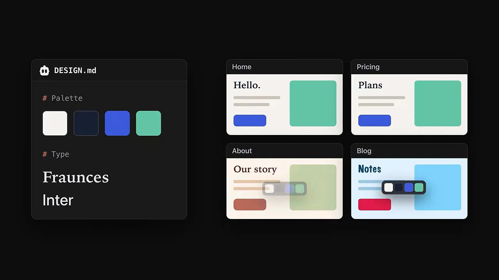
다 만든 뒤에는 다른 에이전트들이 결과를 검토하고 문제를 돌려보내 고치게 해요. 이 수정 라운드가 언제 멈추는지가 영상의 핵심 설명이에요. 아래 그림은 그 흐름을 한 장으로 옮긴 거예요.
flowchart LR M["메인 에이전트
공통 스타일 정하기"] --> B["서브 에이전트들
페이지마다 하나씩 동시에"] B --> R["검토 에이전트
문제 찾기"] R --> S{"멈출 조건에
닿았나요?"} S -- "아니요" --> F["문제를 돌려보내
고치기"] F --> R S -- "예" --> D["완성"]
영상의 Refinement 화면이 이 멈춤을 보여 줘요. 왼쪽 막대가 라운드마다 남은 문제 수예요. 1라운드 9개, 2라운드 3개, 3라운드에는 사소한 문제(minor)만 남았어요. 그래서 오른쪽 세 조건 중 'Only minor issues'에 체크가 들어가고, 오른쪽 위에 Stopped가 떠요. 4라운드와 limit 선까지 가지 않고 끝난 거예요.
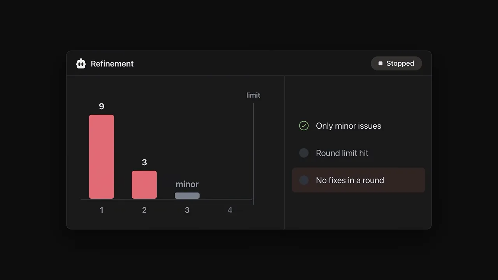
스타일에 따라 결과가 갈렸어요
영상은 앞 데모와 같은 앱 아이디어로 Bunshin을 돌렸어요. 디자인 스타일을 묻자 일러스트가 많은 화려한 스타일을 골랐고, 결과는 skillpop이라는 페이지가 됐어요. 아래 카드 세 장처럼 스킬마다 큰 일러스트가 붙어 있고, 작은 애니메이션이 페이지 곳곳에 들어갔어요. 영상은 이 일러스트 덕분에 전형적인 AI 사이트처럼 보이지 않았다고 해요.
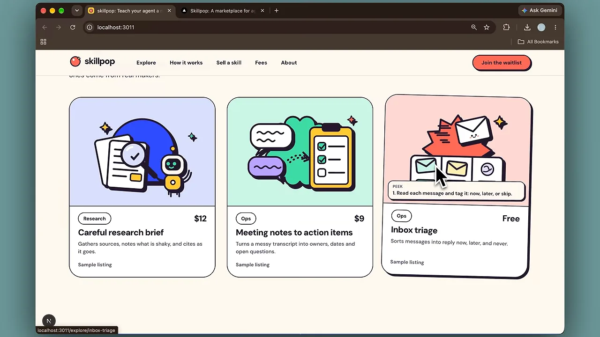
미니멀 스타일로도 시험했어요. 검은 바탕에 'If you write skills'라는 큰 글자가 왼쪽에 있고, 설명은 오른쪽에 작게 놓였어요. 글자 배치 같은 부분은 달라 보이지만, 페이지 전체는 여전히 전형적인 AI 디자인에 가까웠어요.
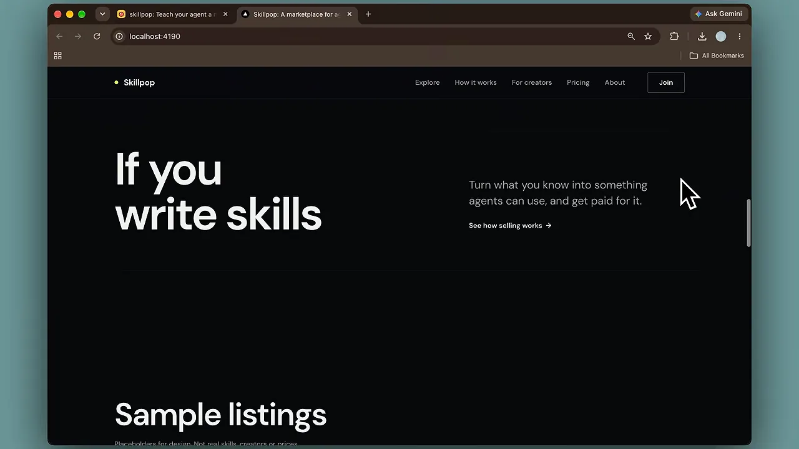
사이트의 디자인 값을 그대로 뽑기 — Dembrandt
스크린샷은 에이전트에게 원하는 분위기를 보여 줄 수 있어요. 그래도 여백 같은 작은 값은 에이전트가 짐작해야 해요. 네 번째 저장소 Dembrandt는 그런 값을 사이트에서 바로 뽑아 와요. 페이지를 브라우저로 열고, 거기서 실제로 쓰인 스타일을 읽어요.
아래는 Gumroad에서 뽑은 결과예요. Colors에는 색 코드와 역할(background, text, primary, accent)이, Typography에는 글꼴 ABC Favorit와 크기 목록이, Spacing에는 4px, 6px, 8px 같은 간격 단위가 나와요.
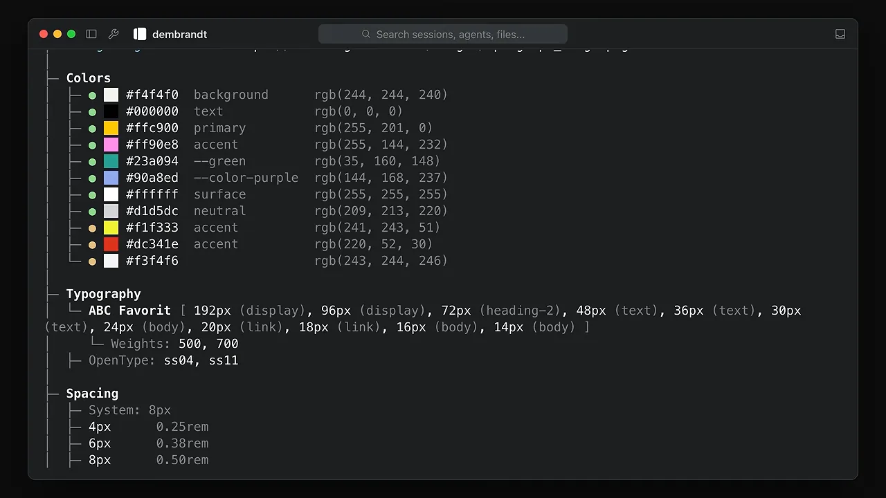
DESIGN.md로 저장해 스타일 가이드로 쓰기
스킬을 쓰면 사이트 링크만 주고 디자인 값을 뽑으라고 하면 돼요. 그 값을 DESIGN.md에 저장하라고 하면, 에이전트가 페이지를 만들 때 따를 스타일 가이드가 생겨요. 아래 왼쪽 DESIGN.md 첫 줄에 name: 'Gumroad'가 있고, primary #FFC900, tertiary #FF90E8, 글꼴 ABC Favorit, 기본 간격 8px, 모서리 4px가 적혀 있어요. 오른쪽은 이 파일로 만든 dog-ear라는 책 판매 페이지예요.
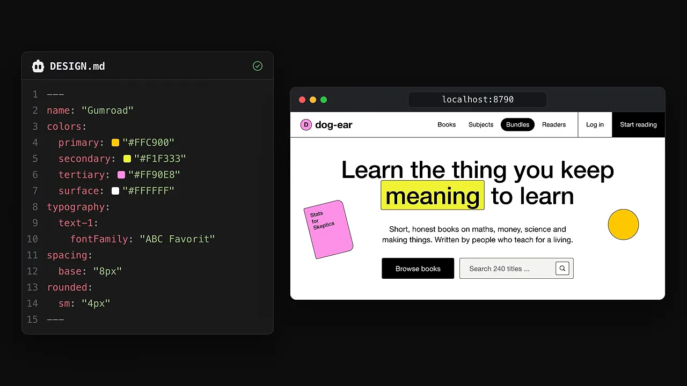
DESIGN.md의 색을 그대로 써요. 영상 06:22에서 보기수정 전후로 디자인이 바뀌었는지 비교하기
나중에 다른 수정을 하다가 에이전트가 디자인을 실수로 바꿀 수도 있어요. 그럴 때는 수정 전에 디자인 값을 저장해 두고, 수정 뒤 다시 스캔한 값과 비교하게 하면 돼요. 아래 Before와 After를 보면 색 팔레트 하나가 파란색으로 바뀌어 있고, 가운데 'changed' 표시 두 개가 무엇이 달라졌는지 짚어 줘요.
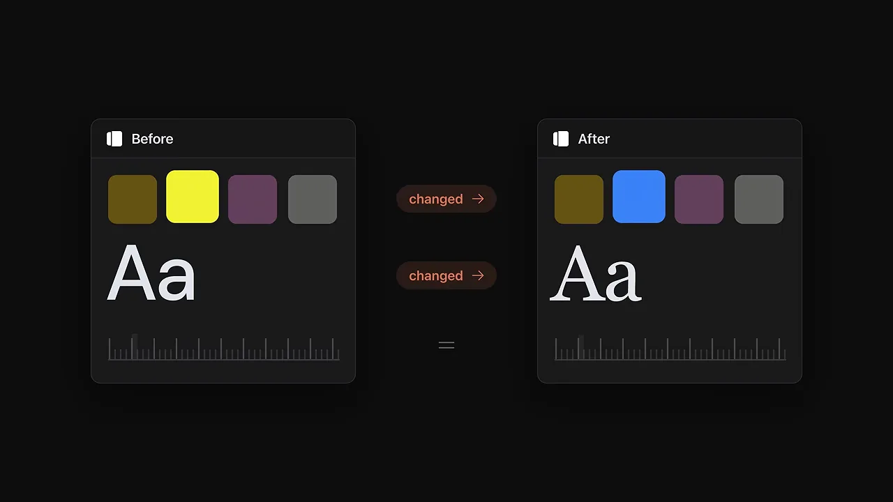
Gumroad 스타일로 만든 결과
최종 페이지는 Gumroad와 똑같지는 않지만 분위기가 확실히 익숙해요. 'Learn the thing you keep meaning to learn' 제목에 노란 형광 강조가 들어가고, 아래 검은 띠에는 '41,000 readers', '240 titles' 같은 숫자가 별표로 이어져요. 에이전트에게 HTML(HyperText Markup Language) 애니메이션을 더해 달라고도 했는데, 그 애니메이션도 페이지와 같은 스타일을 따랐어요.
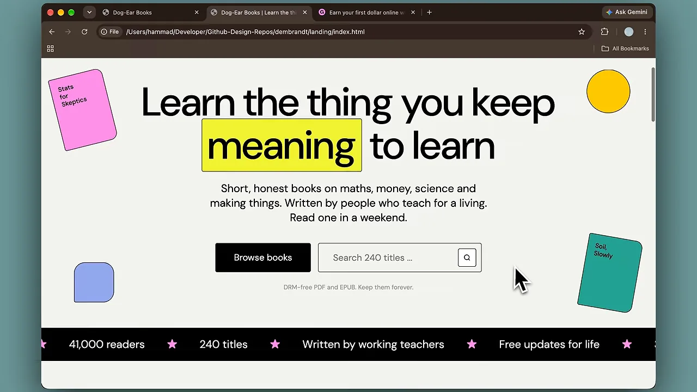
앱 스토어 이미지 만들기 — App Store Screenshots
앱 스토어에서 사람들은 이 앱이 무엇을 하는지, 왜 써야 하는지를 한눈에 봐야 해요. 다섯 번째 저장소 App Store Screenshots는 실제 앱 화면을 스토어 페이지용 이미지로 바꿔 주는 스킬이에요.
- 에이전트에게 재료를 줘요 — 실제 앱 스크린샷, 앱 아이콘, 앱이 하는 일 설명. 스토어와 스타일도 고를 수 있어요.
- 에이전트가 내 컴퓨터에 편집기를 띄워요 — 스크린샷을 중심에 두고 스토어 이미지를 디자인하는 작은 앱이에요. 브라우저에서 localhost 주소로 편집기가 열려요
- 기기를 골라 내려받아요 — 편집기에 들어 있는 크기대로 만들어 zip 파일 하나로 묶어 줘요.
- zip을 그대로 스토어에 올려요
아래가 그 편집기예요. 데모 앱은 Orbit이라는 습관 관리 앱이고, 왼쪽에 화면 여섯 장의 목록(Build habits, Plan your day, Watch yourself, Start a habit…)이 있어요. 가운데는 실제 앱 화면 위에 큰 문구를 얹은 스토어 이미지들이고, 오른쪽 Screen settings에서 레이아웃, 라벨, 제목을 고쳐요. 위쪽의 iOS, Mac, Android 탭으로 플랫폼을 바꿔요.
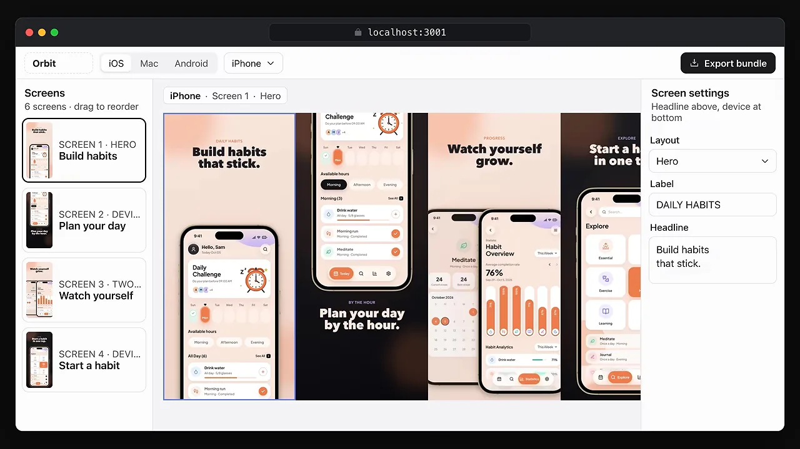
내보낼 때는 기기마다 정해진 크기로 만들어 줘요. 아래 화면은 iPhone용을 내보내는 중이에요. 6.9인치용 1320×2868과 6.5인치용 1284×2778 두 크기가 나와요.

내려받은 파일은 01-hero.png부터 06번까지 이름이 붙어 있어요. 오른쪽 App Store Connect의 'Previews and Screenshots' 칸에 그대로 끌어다 올리면 돼요.
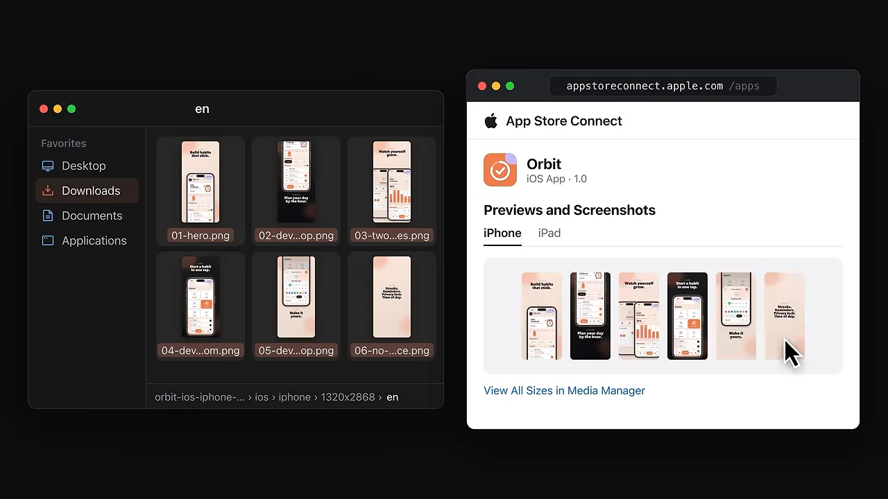
프로젝트는 내 컴퓨터에 남아요. 앱이 바뀌면 언제든 이미지를 다시 고칠 수 있어요. 데모에서는 iOS용만 채웠지만 Android용도 만들 수 있고, 앱이 Mac에도 있으면 Mac용도 만들어요. 바꾸고 싶은 게 있으면 에이전트에게 말로 시키면 돼요.
출시 영상 만들기 — Brag
AI로 제품을 만드는 것보다 사람들이 그 제품을 사게 만드는 게 더 어려울 수 있어요. 그래서 왜 쓸모 있는지 보여 줄 방법이 필요해요. 여섯 번째 저장소 Brag는 프로젝트를 출시 영상으로 바꿔 줘요. 스킬이 에이전트에게 프로젝트를 읽게 하고, 앱의 디자인과 문구로 영상을 계획하게 해요. 계획을 사람이 다 짤 필요가 없어요.
아래가 그 계획이에요. 식물 관리 앱 Fernwork를 예로, brag-plan.md에 장면 네 개가 길이와 함께 정리돼 있어요. Hook 3.4초, Schedule 4.6초, Plant ID 4.8초, Reminders 4.6초예요.
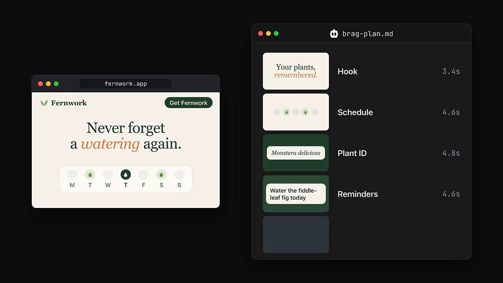
full 모드와 slim 모드
Brag에는 모드가 두 개 있어요. full 모드는 HyperFrames라는 영상 제작 도구를 쓰고, 에이전트가 따를 단계를 정해 줘요. 아래 화면의 네 단계가 그 순서예요. Inspect(rubric 9/9) → Plan(brag-plan.md) → HyperFrames(hyperframes check) → Render(brag.mp4)로 가요.
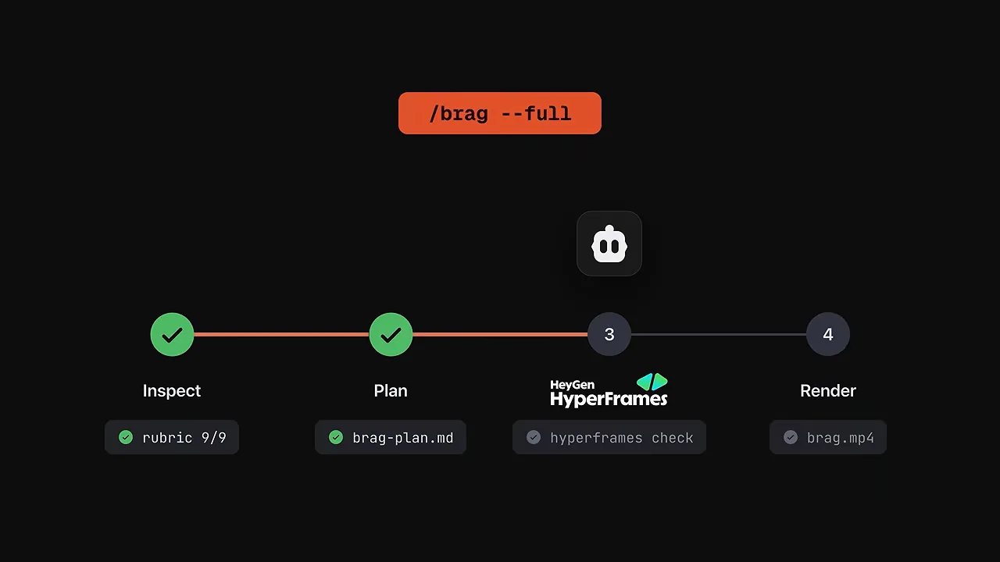
slim 모드는 Opus 5.5에 맞춰 만들었어요. 도구와 만드는 방법을 에이전트가 더 자유롭게 골라요. 아래 화면에서 /brag-slim 옆에 Opus 5.5가 있고, 그 아래에 에이전트가 고를 수 있는 도구로 Chrome, Node.js, Python, FFmpeg, Blender가 놓여 있어요.
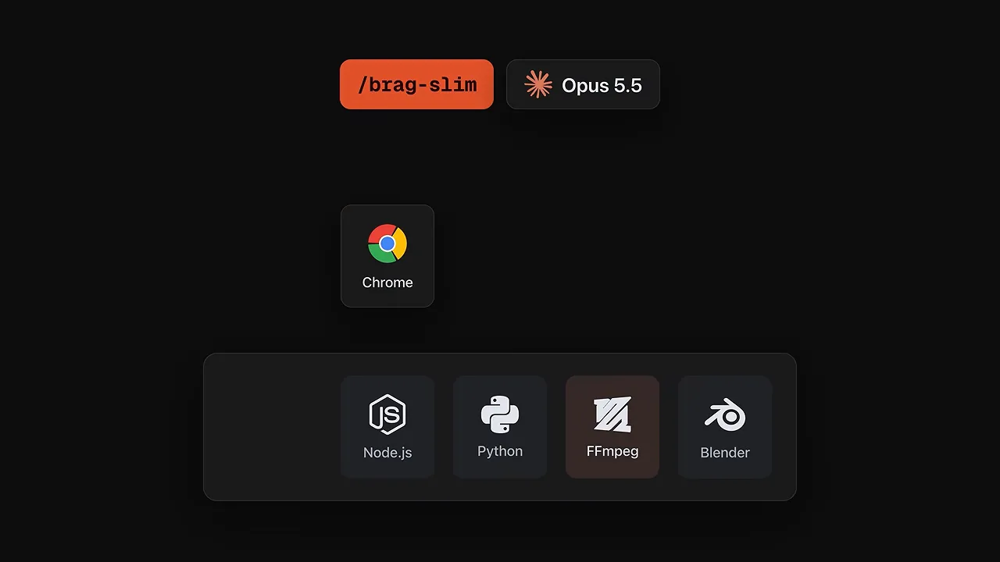
| full 모드 | slim 모드 | |
|---|---|---|
| 만드는 방식 | HyperFrames와 정해진 단계를 따라요 | 도구와 방법을 에이전트가 골라요 |
| 맞춘 모델 | 영상에서 따로 말하지 않아요 | Opus 5.5 |
| Skillbay 데모 결과 | 랜딩 페이지 구역을 하나씩 훑고 끝나요 | 훅으로 시작하고 자기 아이디어를 더해요 |
| 주의할 점 | — | 큰 모델과 함께 쓸 때만 더 나아요 |
무엇이 나오나요
어느 모드든 제품 전체를 다룰지, 기능 하나에 집중할지 고를 수 있어요. 영상의 분위기도 고르고, 미리보기를 보며 고쳐 달라고 한 뒤 저장해요. Brag는 20초쯤 되는 영상을 목표로 해요. 아래 brag-output 폴더에 결과물이 모여 있어요. brag.mp4가 영상, brag.jpg가 함께 올릴 커버 이미지, share-copy.txt가 영상과 같이 올릴 짧은 글이에요.
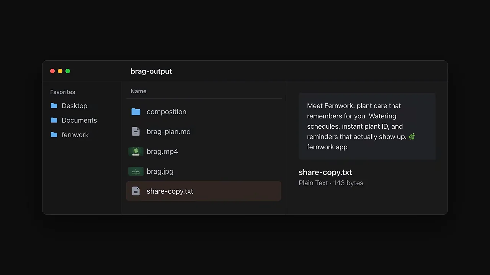
영상 속 장면이 진짜 앱인지 확인해요
Brag가 만든 영상이 실제 앱을 녹화한 것은 아닐 수 있어요. 앱의 일부를 장면으로 다시 만들고, 실제로는 없던 클릭을 넣기도 해요. 아래가 그 예예요. 왼쪽 brag.mp4에서는 버튼을 누르자 'Order placed'(주문 완료)가 떠요. 오른쪽 실제 앱(localhost:3000)의 같은 자리에는 'Mark as watered'(물 줬음 표시) 버튼이 있어요. 실제 앱에는 주문 기능이 없는 거예요.
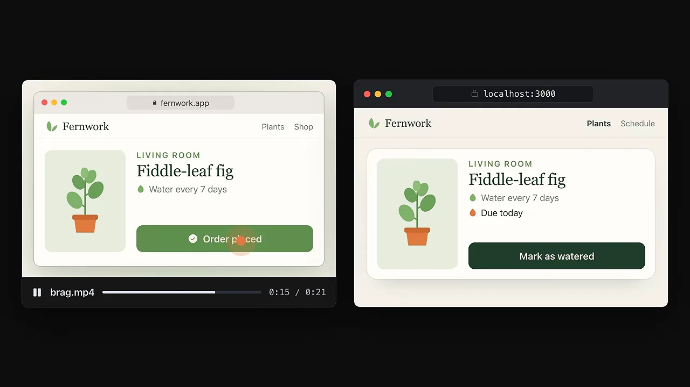
Skillbay 랜딩 페이지로 만든 두 영상
영상은 에이전트에게 깃허브 링크를 주고 스킬을 폴더에 설치하게 한 뒤, 앞에서 만든 Skillbay 랜딩 페이지로 출시 영상을 만들게 했어요. 실제 제품이 없어서 랜딩 페이지가 재료의 전부였어요. 아래는 full 모드 영상이에요. 'From search to superpower in two steps.' 구역처럼 랜딩 페이지의 부분을 다시 쓰면서 구역을 하나씩 훑고 끝나요.
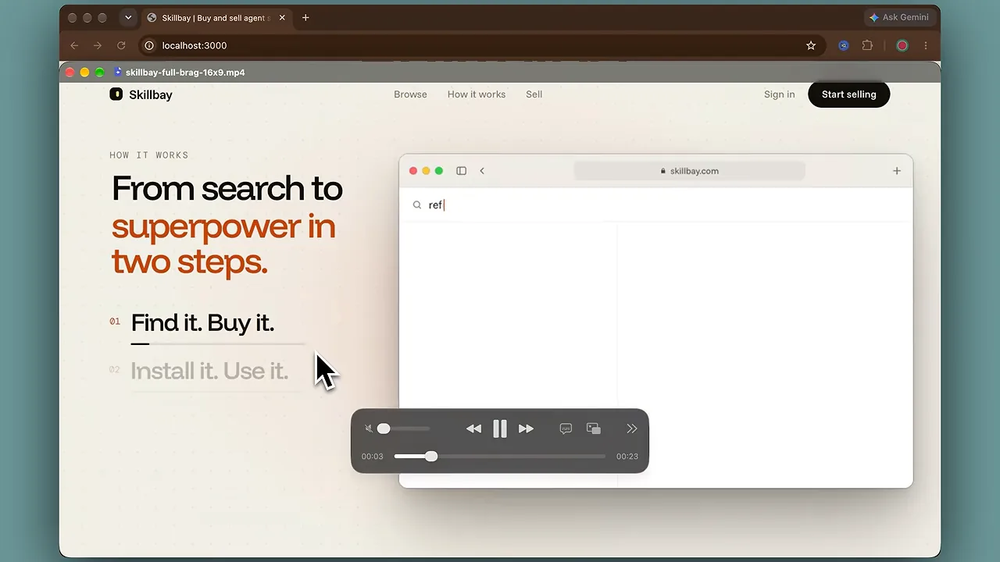
slim 모드 영상은 훅으로 시작해요. 아래처럼 'Teach your agent anything.' 문구가 화면을 채우고, 그 뒤로 나머지 구역을 이어 가요. 구역 순서는 full 모드와 같지만, 그대로 베끼지 않고 자기 아이디어를 더했어요. 영상의 테스트에서는 이쪽이 훨씬 나았어요. 다만 slim은 큰 모델과 쓸 때만 더 낫다고 해요.
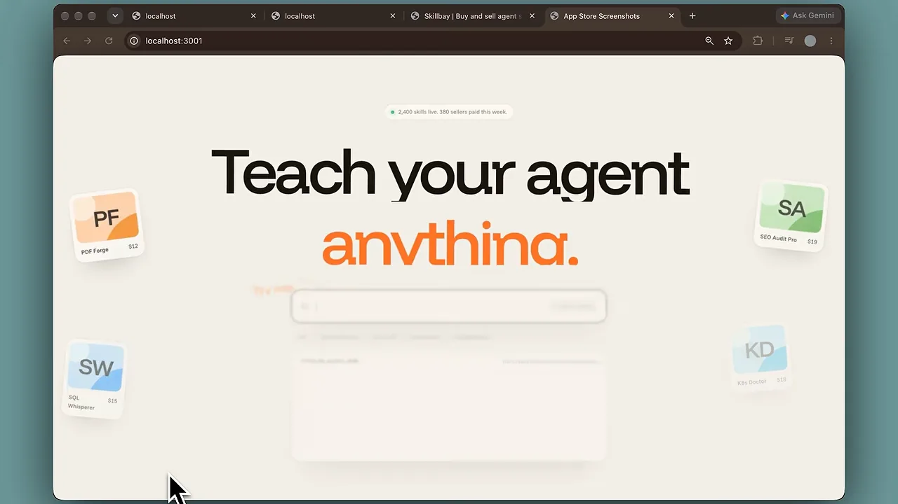